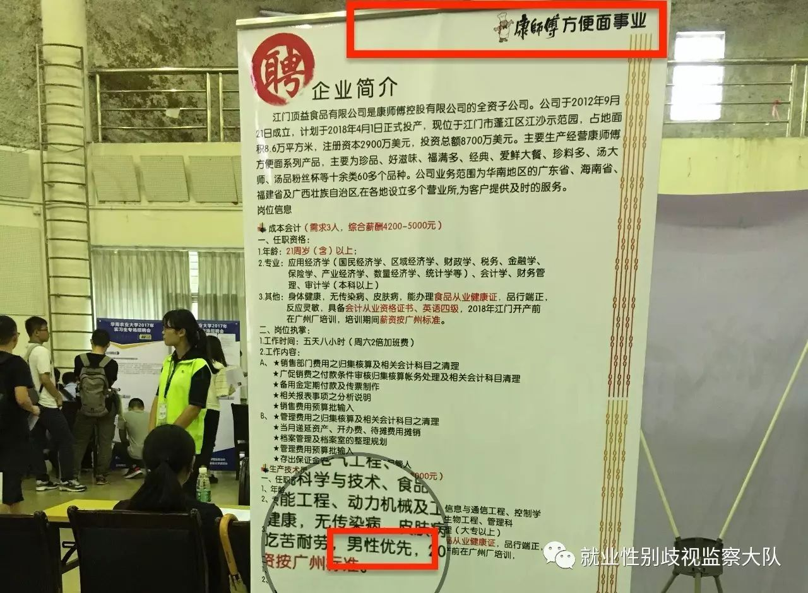

点击这里关注我们
志愿者去逛华南农业大学的校园招聘会的时候，发现江门顶益食品有限公司——康师傅方便面投资（中国）有限公司的全资子公司——在现场公然打着“男性优先”的招聘广告。昨天（5月16日），志愿者联系该公司，要求更换广告内容，撤下“男性优先”等字，却遭到了拒绝，并称“男性优先”并不是性别歧视。
招聘会现场图片：生产技术员等岗位“男性优先”
01
沟通
以下是志愿者和该公司的沟通内容：
（志愿者，简称“志”；江门顶益食品有限公司，简称“江”）
志：（生产技术员和设备技术员）基于什么考虑只招男生？
江：因为它的工作环境比较恶劣，所以我们是优先招男生。
志：你们可以把板子上面（岗位要求）改一下吗？改成男女不限、性别不限之类的？
江：我们还是会只优先男性。如果是其它岗位，比如检验岗位，我们就会只优先女生。它是根据岗位要求，比如说是在高温坏境下，确实是有部分女生可以，但是从某种角度说，我们不可能男女平等，还是会继续说“优先男性”。
志：我希望你们公司可以把“男”去掉。
江：我们没有直接写“男”，我们写的是“男性优先”。有一些岗位，我们也是写的女性优先，比如说公关岗位就是女性优先，我不能说是找个男的在那里吧？
志：为什么公关岗位不能有男性？
江：你有见过礼仪先生吗？我们这里只有礼仪小姐……护士有男护士，但是护士学校90%都是女性，为什么男生不投呢？它是有选择性的，而不是性别歧视。
（随后在志愿者的一再要求中，该公司职员挂断了电话）
02
公司神逻辑
在这段对话中，可以看到一些公司的逻辑：
1、在高温环境下工作，女性不合适，所以我们优先招男性。（但是，谁来审核该环境是不是符合国家规定的女性不能作业的环境呢？——大部分的回复是：公司领导。）
2、你有见过礼仪先生吗？我们只有礼仪小姐。你们有见过XX岗位招女性吗？我们只招男性。但是我们没有性别歧视。
3、护士有男护士，90%都是女护士，幼师90%也都是女性。这些岗位女性太多，我们肯定先招男性，这是我们的自主选择，肯定不是性别歧视嘛。
4、我们没有直接写招“男”，写的是“优先男性”。至于有女性看到“优先男性”不来应聘，那和我们就没有关系了。我们没有性别歧视，是她们的选择。
（图片来源网络）
03
“男性优先”是性别歧视
越来越多的职位，因为各种各样的原因，把女性拒之门外。“男性优先”，女性来从事这个岗位要比男性更优秀，企业才会考虑。这样的理由真的不是就业性别歧视吗？我国的法律给出了答案。
《中华人民共和国就业促进法》第三章 第二十七条
国家保障妇女享有与男子平等的劳动权利。
用人单位招用人员，除国家规定的不适合妇女的工种或者岗位外，不得以性别为由拒绝录用妇女或者提高对妇女的录用标准
最后，我们将会向江门市人社局举报该企业，同时会继续和华南农业大学就业指导中心进行沟通，请关注后续。
（PS：我们被删的文章《眼神交汇的那一刹那，我知道他们不招女性……》申诉失败了，微信并没有给确切的申诉失败理由，想看被删文，戳下面。）